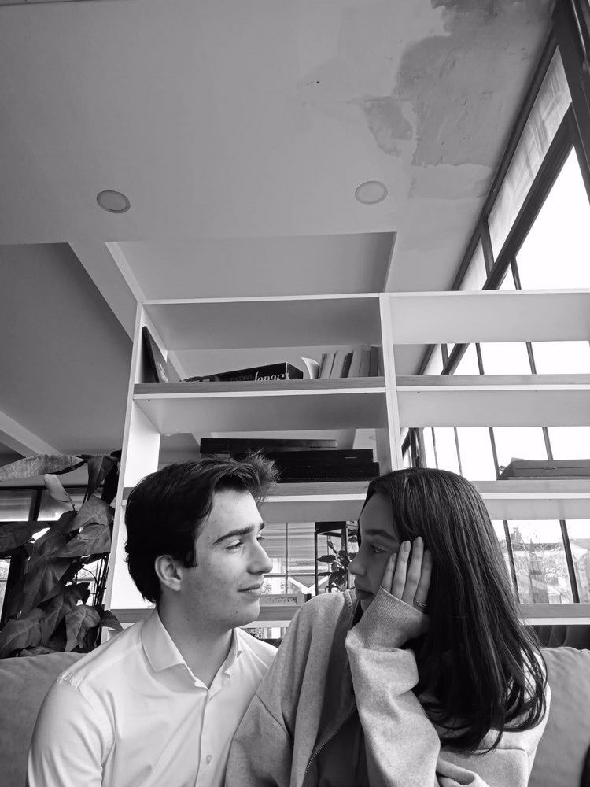
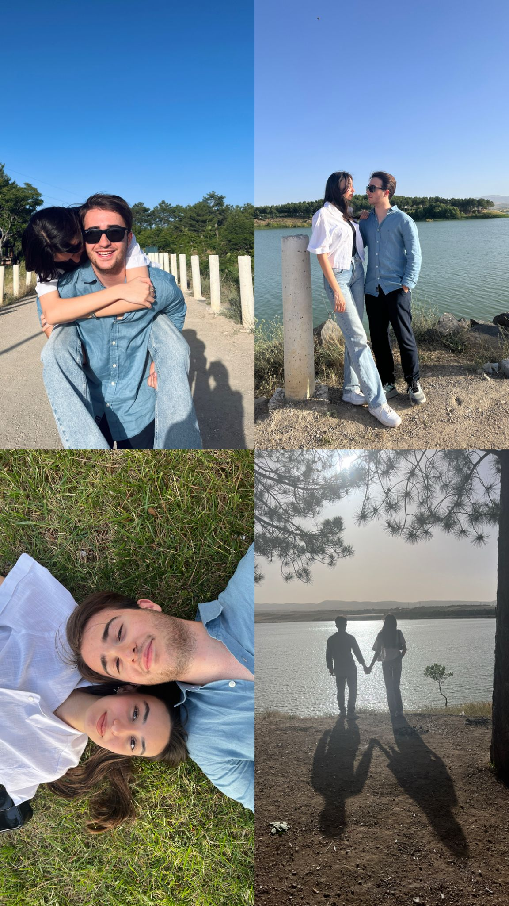
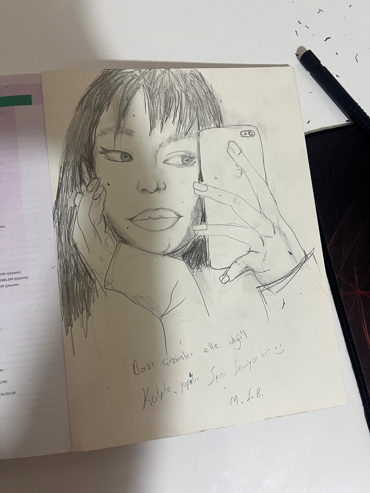
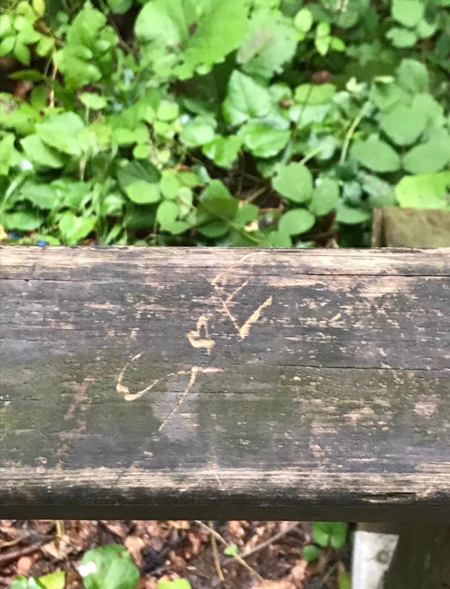
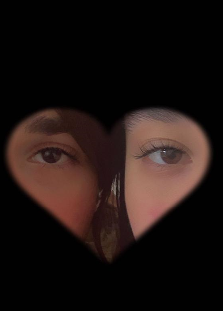
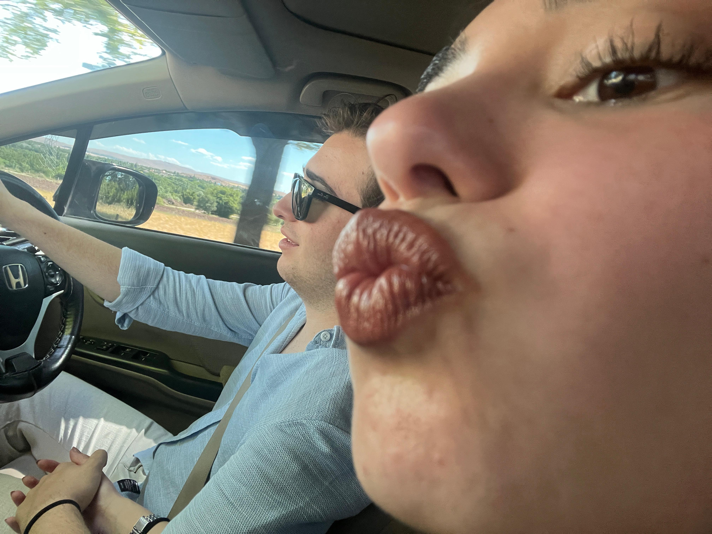
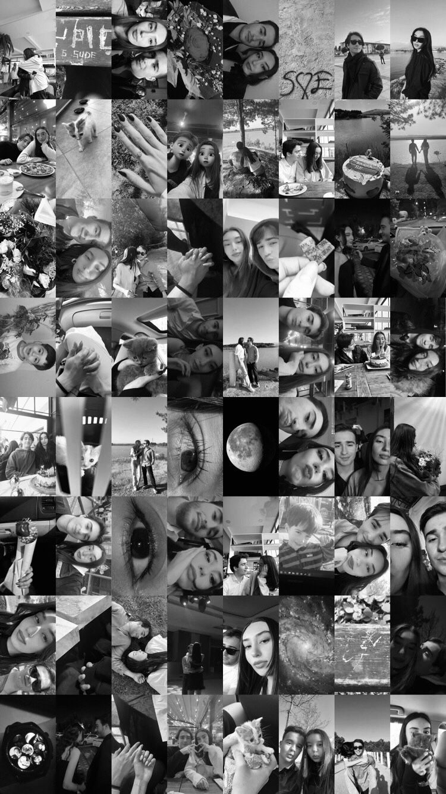
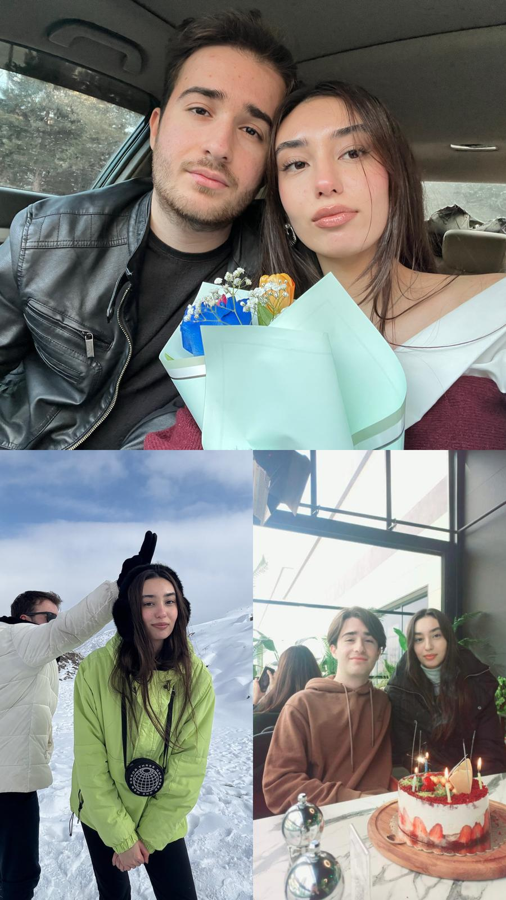

Doğum günün kutlu olsun Sudişimmmmm, seviyorum seni
Şarkıyı aç öyle devam ett
Birlikte bir yaşa daha giriyoruz, nice yaşlarımıza sevgilim
Unuttun mu biz her şeye rağmen başarmıştık 04.06.22
Bu eli hayatım boyunca hiç bırakmayacam
Ben senin için hayatımı yakmışım mum ney ki :)
 Ömrümün sonuna kadar sana böyle bakacağıma söz veriyorum japonum
Hayatımın özeti (hayatım derken senden bahsediyorum senden başka hayatım yok :))
 Hiç kimse sana güldüğüm gibi güldüremez beni mutluluk kaynağım




Benimde dünyam sensin sen olmazsan benim yaşayabileceğim bir dünya yok özür dilerim seni seviyorum
 Hayatımın bu fotolar gibi renksiz olmamasının sebebi sensin
Güzeliz çok güzeliz, birbirimizi keseriz Balık burcu kalbinden kopan biz değil miyiz
Gözlerin bir deniz derin ve huzurlu
her bakışında kaybolur kalbim durulur
sözlerin bir melodi, rüzgarda dans eden
her hecede aşkı duyarım seninle özleminden
bir gülüşün yeter karanlıkları aydınlatan
Sude seninle hayat bahar gibi taptaze bir çiçek gibi
kalbimde açan çiçekler adını fısıldar
seninle her anım bir masal bir rüya gibi
Hayallerimde dolaşırken yıldızlar şahit
birlikte yaşadığımız sevda sonsuz bir hayatı yaşatır bana
Sude adınla başlar her güzel günüm adımla son bulsun
sensiz geçmez zaman ben hep senin yoluna feda güzelim
Seni kırdığım için çok üzgünüm gerçekten çok telafi etmek isterim ne söylesem ne yapsam hatayı geri alamam veya düzeltemem hiçbir bahanesi yok ama gerçekten pişmanım umarım bir gün affedebilirsin konuşmak istersen buradayım gerçekten çok özür dilerim ve çok haklısın biliyorum seni seviyorum özür dilerim sevgilim 🤍🤍🤍